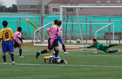
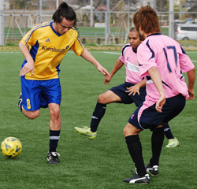
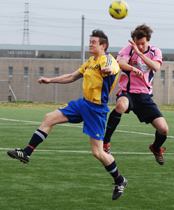
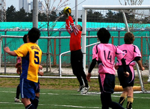

|
Fukuda Denshi, Sunday 4th April.
The Swiss have been the form team in Division 2 over the last couple of months, putting together a string of results that have taken them to the verge of promotion and within site of the summit. Panthers, on the back of their first defeat of the season last time out and missing a number of key players (and me), were looking a bit wobbly and in danger of undoing all the good work. So the scene was set for a good old fashioned 6-pointer at Fukuda Denshi.
Panthers were forced to make wholesale changes but it's a credit to the strength of the squad that even with a couple of new faces, the team looked a really strong outfit. A welcome return for Frank-inio was sure to be a crowd pleaser and Pete Swinney linking up with Ben and Romen in midfield, looked liked a solid core to the team. Saco and James filled in at full backs alongside Phil in the sweeper role and Ma's two futsal mates (the unknown quantities) started on the bench, well actually they weren't on the bench, they were standing next to it, that is they would have been, had there been a bench. Anyway,.........

Cheered on by a vocal band of yodelling Swiss supporters, their team started much the stronger and quickly got a grip of the game. The first 15 or 20 minutes was pretty much one-way traffic with the Swiss carving out a number of good chances. A one on one with the keeper was dragged wide of the post and a deflected shot struck the bar with Sid well beaten. I think you could safely say that we'd have settled for a point at this stage. The team needed to get a hold of the ball, learn each others names and start to play a bit. Fortunately, at this point Frank started to work his magic with some sublime Brazilian footwork and the Panthers began to retain possession and claw their way back into the game. There was a bit of a mismatch upfront with the diminutive Sho up against the Swiss “man-mountain” central defender, but some good movement was beginning to open up a few chances. Mark tried his luck from range but hit straight at the keeper and the Swiss defence were looking solid until a cross from the right side found Ma in space and a clinical left foot finish put the Panthers one up at half time. Definitely a half of two halves, with the Swiss dominating the first 20 and Panthers coming strong in the second 20 minutes. Great effort from Frank in that first period.
The second half started off pretty much as the first half finished with Panthers having the better of possession and territory. Romen was using his subs well, giving everyone a good run out and it gave us chance to take a look at the two new guys. Kei in particular caught the eye and looked a class act in the central midfield area. Easy in possession and with a good range of passing. Definitely one for the future.

The Swiss were far from out of it though and with the ever dangerous Shosuke and their full back pushing on Saco needed to be on his toes on a couple of occasions. With the Swiss forced to push on, it opened up more space for Tom and Sho to exploit. Sho managed to wriggle free of his marker on the edge of the box only to see his shot well saved by the keeper. Moments later, a cross from the right was met by Ben's header and scrambled to safety as the Panthers looked to get the decisive second goal. The Swiss supporters were getting restless at this point but they raised their team again and the sound of cow bells and yodelling reached a crescendo when the Swiss drew level with about 10 minutes to go. A bit against the run of play, but the Swiss won a free kick in right midfield and with all the big men forward, a well hit cross was met by a brave header by Karl Ring who rose the highest to beat Sid to the punch.
At 1-1, neither team wanted to settle for a draw and the game opened up for both sides. Shosuke went on a couple of mazy runs to push the Swiss forward but sliced a good chance over the top when the ball fell invitingly on the right edge of the box. In the end, it was the Panthers who settled the match with a slick passing move down the right before a cross was neatly finished at the near post by Sho. The entire Swiss defence called for offside and looked up for a flag from their linesman, who strangely appeared to have gone AWOL. Oh hang on, there he is standing on the half way line.........! Fortunately, your intrepid reporter was on photo duty and this was one of the few pieces of action that he managed to capture. Having subjected the evidence to a rigorous forensic examination, I can confirm that the Russian linesman got it spot on! No arguments there then.
That was pretty much the end of the action in a good competitive match, played in a good spirit. Panthers are in touching distance of the title but need to keep their foot on the pedal to get the job done. The Swiss have their own battles to fight but if they can maintain their form, they'll be favourites for promotion.
Report by Andy Vaughan
|